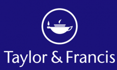
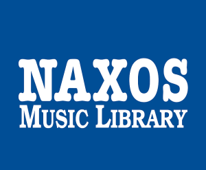
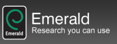

Prieiga prie duomenų bazių:
Jungiantis iš LMTA kompiuterių tinklo LMTA bendruomenės nariams prisijungimo slaptažodis nereikalingas.
Norint duomenų bazėmis naudotis iš kitų kompiuterių (namuose ir kt.), reikia prisijungti per nuotolinę prieigą EZPROXY.
LMTA bendruomenės nariai prisijungia vieningu vartotojo vardu ir slaptažodžiu:
Vardas: Jūsų LMTA el. paštas.
Slaptažodis: Jūsų LMTA el. pašto slaptažodis.
Iš duomenų bazių galite išsisaugoti nedidelį duomenų kiekį (1 straipsnis iš 1 žurnalo arba ~20% elektroninės knygos vieno prisijungimo metu), bet negalima nukopijuoti viso žurnalo. Duomenų bazių duomenys gali būti perkeliami į kompiuterį, spausdinami ir pan. Duomenų perdavimas tretiesiems asmenims, kėlimas į internetą ar naudojimas komerciniais tikslais griežtai draudžiamas. Daugiau, kaip naudotis duomenų bazėmis rasite ČIA
PRENUMERUOJAMOS DUOMENŲ BAZĖS |
|
|---|---|
 |
MEDICI.TV – duomenų bazę sudaro koncertai, operų ir baletų įrašai, dokumentiniai filmai, menininkų portretai ir edukacinės programos. |
 |
EBSCO – viso teksto mokslinių straipsnių duomenų bazių paketas. Jį sudaro humanitarinių, socialinių mokslų, medicinos, sveikatos apsaugos ir kt. mokslo sričių žurnalai. |
|  | TAYLOR & FRANCIS – duomenų bazėje pateikiami įvairių mokslo sričių visateksčiai moksliniai žurnalai. Joje sukaupta daugiau kaip 1320 žurnalų socialinių, humanitarinių, technologijų, biomedicinos ir fizinių mokslų temomis. |
JSTOR – mokslinės informacijos platforma, skirta universitetams. Suteikiama prieiga naudotis daugiau nei 2000 archyvinių ir šiuolaikinių akademinių žurnalų, knygų. |
|
|  | NAXOS MUSIC LIBRARY – virtuali muzikos įrašų biblioteka, suteikianti prieigą prie daugiau nei 650 įrašų kompanijų išleistų klasikos, džiazo, world ir kitų stilių muzikos įrašų. Duomenų bazėje sukaupta daugiau nei 2 mln. garso takelių, informacija apie kūrinius, kompozitorius, virš 700 operų aprašymų ir libretų ir kt. |
GROVE MUSIC ONLINE – pagrindinis ir nepralenkiamą įtaką turintis paieškos šaltinis muzikos tyrimams, išsamus ir nuolat atnaujinamas enciklopedinių ir visateksčių straipsnių rinkinys. |
|
|  | EMERALD – verslo, vadybos, rinkodaros, informacijos ir komunikacijos mokslų viso teksto mokslinių žurnalų duomenų bazė. |
TESTUOJAMOS DUOMENŲ BAZĖS |
|
Šiuo metu testuojamų duomenų bazių nėra. |
|
ATVIROJI PRIEIGA |
|
Atviroji prieiga (angl. Open Access) – nevaržoma ir nemokama prieiga prie mokslinių tyrimų produkcijos (mokslinių straipsnių, tyrimų duomenų, konferencijų pranešimų ir kitos publikuotos bei nepublikuotos medžiagos). Atvirosios prieigos vystymasis suteikia galimybę skleisti tyrimų rezultatus, užtikrinant jų matomumą pasaulyje bei suteikti akademinės bendruomenės nariams geresnę prieigą prie pasaulio mokslinių išteklių. Mokslinių publikacijų atviroji prieiga yra užtikrinama per atvirosios prieigos žurnalus, archyvus bei talpyklas. Atviros prieigos elektroninių tezių ir disertacijų (ETD) duomenų bazės: Open Access Theses and Dissertations WorldCat (rinktis Advanced search - Contet : Thesis/dissertation) Doctoral Dissertations in Musicology Informacija pildoma… |
|
| EL. KATALOGAS |
| PASIŪLYK LEIDINĮ |
DARBO LAIKAS: I–V 9.00-18.00 VI–VII nedirba Paskutinis mėnesio penktadienis – švaros diena. Skaitytojai neaptarnaujami Prieššventinę dieną biblioteka dirba viena valanda trumpiau |
LIETUVOS MUZIKOS IR TEATRO AKADEMIJA
Muzikos fakulteto skaitykla: Gedimino pr. 42, Vilnius, tel.: (8-5) 262 8447
Muzikos fakulteto biblioteka: Vilniaus g. 6-2,Vilnius, tel.:(8-5) 262 2330
Teatro ir kino fakulteto biblioteka T. Kosciuškos g. 10,Vilnius,tel.:(8-5) 261 3841
Klaipėdos fakulteto biblioteka: K. Donelaičio g. 4, Klaipėda,tel.: :(8 46) 39 87 99


2019 © LMTA biblioteka